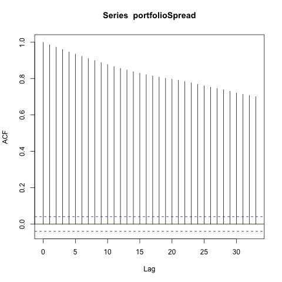
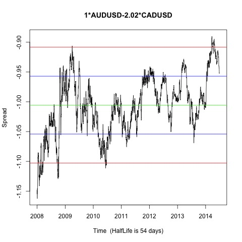
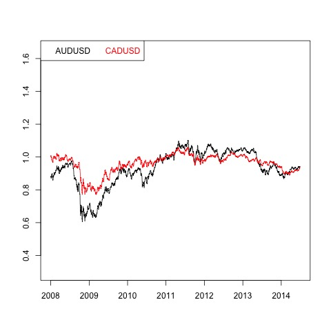
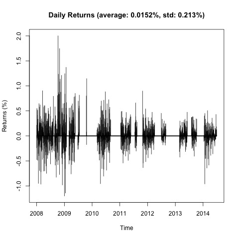
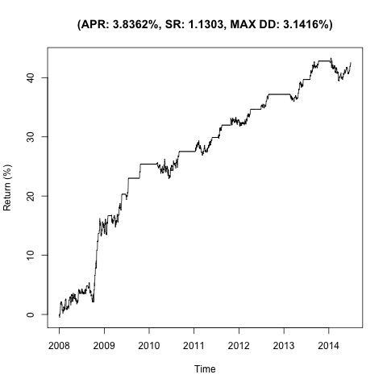

Johansen-Procedure "" "10pct" "5pct" "1pct" "r <= 1 |" 2.63 7.52 9.24 12.97 "r = 0 |" 19.72 17.85 19.96 24.6 "AUDUSD.l2" "CADUSD.l2" "constant" "AUDUSD.l2" 1 1 1 "CADUSD.l2" -2.02 -0.17 -1.26 "constant" 1 -0.78 0.65
Augmented Dickey-Fuller Test p-value 0.0144727161973637    